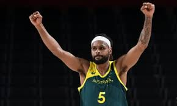

Patrick Sammie Mills AM (born 11 August 1988) is an Australian professional basketball player for the Utah Jazz of the National Basketball Association (NBA). Mills was born and raised in Canberra, and is of Torres Strait Islander and Aboriginal Australian descent. In 2007, he became the third Indigenous basketball player to play for the Australian national team. Mills was selected by the Portland Trail Blazers with the 55th overall pick in the 2009 NBA draft after playing two years of college basketball for the Saint Mary's Gaels.
Mills played for the Portland Trail Blazers for two seasons. In 2011, during the NBA lockout, he played for the Melbourne Tigers of the National Basketball League (NBL) and for the Xinjiang Flying Tigers in China. Mills returned to the United States in March 2012 and signed with the San Antonio Spurs. He became a strong contributor off the bench and helped the Spurs win the 2014 NBA championship. In 2021 he led the Australian Boomers to their first ever Olympic medal at the Tokyo 2020 Olympics. Mills is known for his three-point shooting and his leadership qualities.
